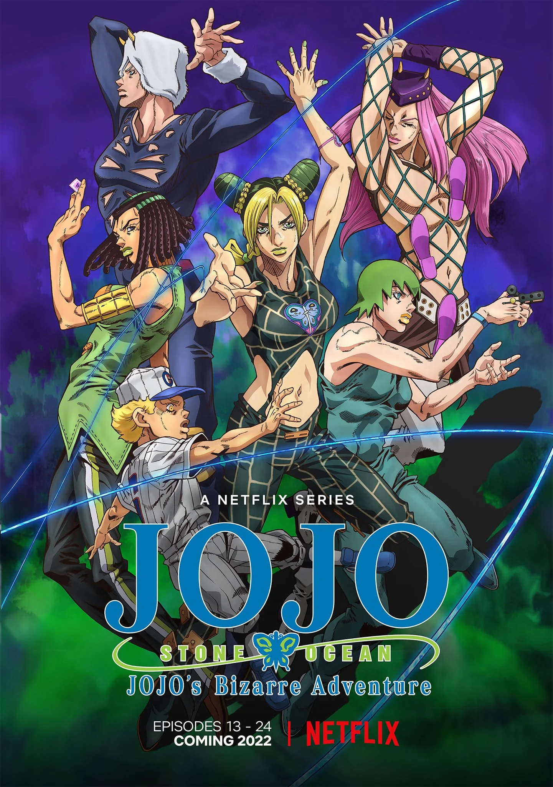

INCRIMINADO POR ASSASSINATO
Artigo principal: Stone Ocean (Arco Narrativo)
Artigo principal: Prisioneira FE40536: Jolyne Cujoh (Arco da História)
Artigo principal: Stone Free (Arco da História)
Primeira aparição de Jolyne Cujoh
O ano é 2011. Jolyne Cujoh é apresentada em um centro de detenção na Flórida, alegando ter sido incriminada por assassinato. Ela faz amizade com Ermes Costello durante sua transferência para a prisão. As circunstâncias de suas acusações são esclarecidas: Jolyne e seu namorado, Romeo Jisso, aparentemente atropelaram alguém. Romeo, temendo por seu futuro, convenceu Jolyne a não chamar ajuda e, em vez disso, se livrar do "cadáver". No entanto, alguns dias depois, Jolyne foi presa.
Ao se encontrar com seu advogado, Jolyne também recebe objetos de seus pais, entre eles um amuleto no qual ela se fere antes de jogá-lo de raiva, pois veio de seu pai, Jotaro Kujo . Ela logo desenvolve um estranho poder que lhe permite se desenrolar parcialmente em fios, usando-o para ajudar Ermes a ficar com seu dinheiro. Ao chegar à famosa Prisão da Rua dos Golfinhos Verdes, situada em uma ilha perto da costa, Jolyne, no entanto, tem dificuldades para se adaptar ao novo ambiente.
Jolyne conhece sua nova colega de cela, Gwess , que inicialmente a maltrata. Jolyne então descobre que o papagaio de estimação de Gwess é, na verdade, um homem encolhido dentro de uma pele de papagaio. Por essa descoberta, Gwess encolhe Jolyne e a coloca dentro da carcaça de um rato para que ela procure uma maneira de escapar da prisão. A busca dá errado: Jolyne cresce lentamente de volta ao normal e é posteriormente vista e atacada pelas Goo Goo Dolls de Gwess . Ao despertar completamente seu Stand, Stone Free , Jolyne força Gwess a encolhê-la novamente e escapa dos guardas, retornando à sua cela.
Com o passar dos anos, Jolyne começa a afirmar sua força entre as outras prisioneiras, ao mesmo tempo que ajuda outra detenta vítima a recuperar seu dinheiro.
O LEGADO DE DIO
Artigo principal: O Visitante (Arco Narrativo)
Jotaro perde seus DISCOS
Jotaro logo vai visitar Jolyne . No entanto, uma criança misteriosa chamada Emporio Alnino a avisa que isso é uma armadilha.
Jolyne ainda é forçada a encontrar Jotaro, e a conversa é tensa, pois Jolyne odeia o pai por sua ausência durante toda a sua juventude. Jotaro conta a Jolyne que um prisioneiro chamado Johngalli A. , um discípulo de DIO , a incriminou para atraí-lo e se vingar, e Jotaro cai na armadilha por sua filha. Finalmente, Jotaro diz a Jolyne que a ajudará a escapar da prisão. A conversa é interrompida por um ataque de Johngalli A. e seu Stand, Manhattan Transfer . Sendo um atirador de elite, Johngalli A. usa Manhattan Transfer para ler o vento e detectar seus alvos, mas a luta se torna mais complexa quando os JoJos descobrem que um segundo Stand inimigo é o responsável por criar a ilusão complexa. Em um momento crítico da fuga, Jotaro vê Johngalli A. e o Stand desconhecido atacando simultaneamente e decide proteger Jolyne. Whitesnake , o segundo Stand, usa assim seu poder para remover o Stand de Jotaro, Star Platinum , e as memórias de Jotaro como dois DISCOS .
Jotaro entra em um estado semelhante à morte, mas confessa a Jolyne que sempre a amou. Comovida, Jolyne decide encontrar uma maneira de recuperar os DISCs do misterioso usuário de Whitesnake. Ela então derrota Johngalli A. sem esforço, mas perde o rastro do segundo Stand. Escapando pela praia com seu pai e o colocando dentro de um submarino, Jolyne decide ficar na prisão para recuperar os DISCs roubados por Whitesnake. Ao ver Johngalli A. gravemente ferido, Whitesnake o executa para eliminar qualquer pista que o leve até ele.
DISCO DA STAR PLATINUM
RASTREANDO O DISCO
Artigo principal: O adesivo de Ermes (Arco da história)
Artigo principal: Somos seis! (Arco da história)
Artigo principal: Foo Fighters (Arco da História)
Artigo principal: O cobrador de dívidas Marilyn Manson (Arco narrativo)
Enquanto isso, Ermes Costello, que estava doente, se recupera de uma febre na enfermaria. Ela desperta seu Stand, Kiss , que pode reproduzir objetos ao colar adesivos neles e danificá-los quando o adesivo é removido. Ermes acidentalmente derruba um DISCO de memória do prisioneiro Thunder McQueen , que guarda um esconderijo com US$ 5.000. O prisioneiro suicida se conecta a Ermes com seu Highway to Hell , refletindo qualquer dano que ele sofra em Ermes, de modo que sua morte também a matará. Ermes consegue escapar.
Ermes lutando contra os Foo Fighters
Ermes é então abordada por Emporio e levada para a sala secreta de fantasmas de Emporio, onde também conhece Narciso Anasui e o Weather Report . Emporio explica que o usuário do Whitesnake é o inimigo. Novos ferimentos alertam Ermes de que McQueen está tentando se matar novamente. Ermes o encontra e o nocauteia de vez, pegando seu DISCO de memória para recuperar o dinheiro e decidindo lutar contra o Whitesnake ao lado de Jolyne.
Jolyne e Ermes se oferecem como voluntários em um grupo de busca com cinco prisioneiros para procurar dois desaparecidos e recebem pulseiras explosivas que detonam se eles se afastarem demais de um supervisor. No campo, Ermes examina novamente o DISCO de memória, no qual outra memória indica um estoque de DISCOS Stand que Whitesnake mantém escondido em um celeiro próximo.
Jolyne e Ermes percebem que são seis, o que significa que um inimigo se infiltrou no grupo. O supervisor delas é morto e arrastado para longe. Jolyne e Ermes precisam encontrar o inimigo oculto. A colônia de plâncton senciente Foo Fighters (abreviada para FF) na verdade tomou conta de todos e começa a lutar contra as duas mulheres.
Ermes tenta levar o supervisor de volta para um local seguro enquanto Foo Fighters é arrastado para terra firme por Jolyne, quase morrendo por depender de se manter molhado. Jolyne poupa FF, já que ele foi coagido a obedecer Whitesnake , e FF assume o corpo do prisioneiro Atroe . Jolyne recupera com sucesso o Star Platinum DISC de Jotaro e o leva de volta para a prisão. É revelado que o verdadeiro inimigo é o padre da prisão, Enrico Pucci .
Enrico Pucci , amigo de DIO e portador do Whitesnake , suborna Miraschon para que o ajude a eliminar Jolyne e lhe dá o Stand Marilyn Manson .
Jolyne , Ermes e FF estão jogando bola quando Miraschon se aproxima e aposta que eles não conseguem passar a bola entre si 100 vezes. Ermes acaba trapaceando, mas Marilyn Manson percebe automaticamente e toma o fígado de Ermes como pagamento. Jolyne aposta outra bola, mas o tempo livre acabou. Ela e FF precisam jogar na prisão e se defender de Miraschon. Jolyne finalmente força Miraschon a devolver o fígado de Ermes e a espanca, deixando-a inconsciente por tempo indeterminado.
ENTREGA DO DISCO STAR PLATINUM
Artigo principal: Operação Jardim Selvagem (Arco Narrativo)
Artigo principal: Alerta de chuva torrencial (Arco narrativo)
Previsão do tempo e Jolyne enfrentam Lang Ranger
Jolyne então liga para a Fundação Speedwagon para elaborar um plano para entregar a eles o Stand DISC. Eles combinam de se encontrar no pátio da prisão. Lá, Jolyne se encontra com Emporio e com o usuário de Stand Weather Report , que pode manipular a atmosfera e diversos fenômenos climáticos.
Eles são seguidos por Lang Rangler, que cospe em Jolyne. Jolyne então segue sozinha para o pátio, mas logo cai sob a influência de Lang, que anula a gravidade de tudo que ela toca. Flutuando e com a atmosfera se afastando dela, Jolyne chama Weather para ajudá-la. Os dois usuários de Stand levam a luta para a fábrica que Jolyne precisa atravessar para chegar ao pátio, e eles têm que lutar em gravidade zero e sem ar. Jolyne e Weather derrotam Lang Rangler, mas Weather está muito ferido para continuar.
Pucci , que por acaso rastreou a ligação de Jolyne, a encontra perto do pátio. Pucci não tem escolha a não ser esconder sua verdadeira identidade e deixar Jolyne passar. No entanto, no pátio, Jolyne é baleada por um guarda que sofreu lavagem cerebral por Whitesnake.
Em um flashback, Pucci conversa com DIO. É explicado que Jotaro queimou o caderno de DIO , que continha um plano para "chegar ao Céu".
Jolyne fica incapacitada e perde o DISCO do Stand, mas o Clima provoca uma chuva de sapos venenosos, permitindo que ela escape. Jolyne tenta se proteger dos sapos, mas aparentemente é dominada. Pucci fica preso pela chuva e usa Whitesnake para tentar recuperar o DISCO do Stand de Jotaro , mas é surpreendido por Jolyne, que o entrega a Savage Garden , um pombo-correio que voa para longe.
A VINGANÇA DE ERMES
Artigo principal: Beijo de Amor e Vingança (Arco da História)
Kiss derrota Sports Maxx
Jolyne percebe que Ermes anda muito solitária ultimamente. FF explica que Ermes veio voluntariamente para a prisão para matar Sports Maxx , um gangster que assassinou a irmã de Ermes, Gloria Costello . Ermes o encontrou e o seguiu para esperar o momento perfeito para se vingar. Por coincidência, Maxx tem se encontrado com Pucci , que lhe deu o Stand Limp Bizkit .
Ermes consegue matar Sports Maxx em sua sala de empalhamento de animais, mas é atacada pelos espectros invisíveis de vários bichos de pelúcia. Jolyne e FF se juntam a ela e a ajudam, apenas para os três perceberem que Maxx escapou.
Maxx percebe que foi morto, mas ressuscitou como um zumbi invisível graças ao Limp Bizkit. Jolyne e Ermes seguem Sports Maxx até um cemitério e são cercados por vários zumbis. Ermes consegue atrair Sports Maxx para um local e horário previsíveis, matando-o de vez, mas fica gravemente ferido no processo. Jolyne recupera o disco de memória de Sports Maxx.
A UNIDADE RESIDENCIAL DE ULTRA SEGURANÇA
Artigo principal: O Segredo do Guarda Westwood (Arco da História)
Artigo principal: Entre no Sonho do Dragão (Arco da História)
Artigo principal: Pai: Jotaro Kujo, Filha: Jolyne Cujoh
Jolyne derrota Viviano Westwood e Planet Waves
Jolyne é levada para a ala de punição por ter causado muitos problemas e suporta estoicamente as duras condições lá dentro. Enquanto isso, Emporio descobre que Whitesnake usou o Limp Bizkit do Sports Maxx para reviver um osso misterioso e descobre que ele está escondido na ala de punição. Jolyne aceita ir até lá e recuperar o osso.
Sabendo que Whitesnake explorará o isolamento de Jolyne para tentar matá-la, FF tenta encontrar um aliado para levá-la para a ala disciplinar. FF tenta forçar Narciso Anasui , o usuário do Diver Down , a ajudar, e Anasui se mostra extremamente cooperativo, pois está apaixonado por Jolyne. Usando o poder do Diver Down para armazenar energia em um local específico, eles conseguem começar a se infiltrar na ala disciplinar.
O novo protetor de Jolyne, Narciso Anasui
Na ala de punição, o guarda Viviano Westwood enlouquece e liberta todos os prisioneiros num acesso de fúria. Enquanto isso, Pucci revela que enviou quatro usuários de Stand para tentar se livrar de Jolyne.
Em um flashback, DIO explica a Pucci como o Stand Survivor manipula as pessoas para lutarem entre si e como ele acredita que, fisicamente, é o Stand mais fraco.
Enquanto Anasui e FF ultrapassam os pontos de segurança, Jolyne começa a lutar contra Westwood. Westwood é um lutador formidável e utiliza Ondas Planetárias , que manipulam pequenos meteoros. A luta se torna brutal, e Jolyne consegue contornar a invulnerabilidade de Westwood aos seus meteoros usando-os para impulsionar sua bota em direção ao rosto dele, derrotando o guarda. Ela percebe que, entre os prisioneiros restantes, restam apenas dois.
Kenzou , um usuário de Stand idoso e portador do Sonho do Dragão , que revela locais de feng shui favoráveis para maximizar a probabilidade de assassinato, desafia Jolyne , mas FF intervém e luta contra ele. As habilidades superiores de Kenzou quase prevalecem contra FF, mas Anasui intervém e revela sua capacidade de reestruturar qualquer coisa por dentro, derrotando Kenzou ao transformar suas pernas em molas.
Jotaro é visto adormecido em posição de lótus sob os cuidados da Fundação Speedwagon . O médico revela que, sem memória, Jotaro não tem vontade de viver e seu corpo está se deteriorando lentamente. Ele quebra o soro e sofre alguns ferimentos no braço, os cortes formando a palavra "Jolyne". Enquanto isso, Jolyne se lembra de sua primeira prisão. Ela havia encontrado uma carteira no chão de um estacionamento e tentou devolvê-la, mas foi acusada de roubo. No presente, a FF cura os ferimentos de Jolyne. No entanto, um certo ferimento em seu braço, com o formato de seu nome, não cicatriza. Ao acordar, Jolyne sente que agora realmente entende seu pai, pois ele estava tentando protegê-la e à sua mãe mantendo-se afastado para que elas não se envolvessem em suas batalhas.
FUGA DA PRISÃO E O BEBÊ VERDE
Artigo principal: O Nascimento do "Verde" (Arco da História)
Artigo principal: Yo-Yo Ma está chegando! (Arco da história)
Artigo principal: FF - A Testemunha (Arco da História)
Artigo principal: DESPERTAR (Arco da História)
Artigo principal: Whitesnake - The Pursuer (Arco Narrativo)
Jolyne captura um prisioneiro que viu com o osso de DIO em sua posse, mas ele logo se transforma em uma planta. Da mesma forma, todos os cadáveres na ala de punição florescem. O osso se funde com as plantas e se desenvolve em um embrião com a marca de nascença Joestar. Enquanto isso, Anasui é abordado por Guccio , que empunha Survivor e o usa como armadilha contra o único usuário de Stand restante, D e G.
FF confronta Pucci
Tendo optado por escapar da ala de punição pela saída leste e chegar ao pântano próximo, Jolyne, Anasui e FF pegam um barco a motor para atravessá-lo. No entanto, o embrião que estava em sua posse é engolido pelo Stand automático Yo-Yo Ma . Incapaz de feri-lo, FF fica para trás para matar D e G enquanto Jolyne e Anasui levam Yo-Yo Ma a bordo. Jolyne e Anasui são perseguidos pelos guardas da prisão e precisam se esconder no pântano. Jolyne percebe que está sendo lentamente derretida por Yo-Yo Ma, mas não consegue se comunicar direito e está incapacitada. Ao mesmo tempo, FF descobre que Enrico Pucci é o mentor dos ataques.
Enquanto Anasui conseguiu neutralizar Yo-Yo Ma fundindo seu cérebro com o de um sapo, Pucci comemora o nascimento iminente de Embryo, mas percebe que FF está planejando matar D e G.
FF teme perder sua inteligência; ela aprendeu a valorizar sua consciência e suas memórias. Guardando com carinho as boas lembranças de Jolyne, FF está pronta para lutar por ela.
O Bebê Verde
FF é confrontado por Pucci. Enquanto FF mata D e G, ele fica gravemente ferido no processo e fica sem água. Enquanto o padre encurrala a colônia de plâncton, o Bebê Verde nasce dos restos mortais de Yo-Yo Ma.
Enquanto isso, Jolyne e Anasui tentam se aproximar do Bebê Verde, cujo Stand automático, Green, Green Grass of Home, os ataca, encolhendo-os à medida que a distância entre eles diminui. O Bebê Verde se interessa por Jolyne, especificamente por sua marca de nascença , e seu poder desaparece. Jolyne e Anasui voltam ao tamanho normal.
Quase morta, FF contata Weather Report por rádio, e ele usa seu poder de controle climático para fazer chover e criar neblina na área. Whitesnake perde o rastro de FF, e ela se encontra com Weather Report. Os quatro se encontram, mas Weather Report era, na verdade, Whitesnake disfarçado. Whitesnake fere gravemente FF e Anasui, mas só consegue ferir Jolyne. Pucci se revela e se aproxima do Bebê. No entanto, Jolyne o algema a si mesma. Uma luta brutal corpo a corpo se inicia.
Em um flashback, DIO dá a Pucci um de seus ossos de dedo. Jolyne leva vantagem na luta, mas Pucci joga o DISCO de memória de Jotaro em Anasui, que está morrendo, ameaçando fazer o DISCO desaparecer para sempre.
Jolyne decide tentar ajudar Anasui a obter o DISCO, e Pucci se aproxima do Bebê Verde , revelando-lhe a senha secreta de 14 palavras, o que faz com que o Bebê toque em Pucci e se funda com ele. Jolyne não consegue ajudar Anasui, mas ele é salvo quando FF sacrifica o restante de seu plâncton para curá-lo, e FF se despede pela última vez da indefesa Jolyne.
RASTREANDO PUCCI
FUGA DA PRISÃO
Artigo principal: Prisão trancada! (Arco da história)
Miu Miu tranca as memórias de Jolyne
Um Pucci transformado deixa a prisão, sem mais utilidade para ela. O plano completo de DIO é revelado, principalmente que Pucci precisa ir para o local com as coordenadas 28 graus e 24 minutos de latitude norte e 80 graus e 36 minutos de longitude oeste. Após ler o DISCO de memória de Jotaro , Jolyne pede a Emporio que a ajude a escapar da Rua dos Golfinhos Verdes. No entanto, Emporio diz que a fuga é impossível por causa do verdadeiro guardião da Rua dos Golfinhos Verdes, que pode tornar a fuga impossível até mesmo para usuários de Stand.
Miuccia Miuller , também conhecida como Miu Miu, se aproxima de Jolyne com seu Stand, Jail House Lock, totalmente revelado, avisando-a para não fazer nenhuma besteira. Jolyne ataca Miu Miu, mas de repente se vê presa em sua cela. Jolyne é afetada por Jail House Lock e não consegue memorizar mais de três novas informações por vez, e embora tente entrar em contato com Emporio, está bastante prejudicada por esse poder.
Enquanto isso, Emporio também foi capturado e está preso em seu quarto, sem se lembrar de como escapar. Jolyne consegue chegar à sala fantasma, mas elas são surpreendidas por Miu Miu. Quando Jolyne recebe uma imagem binária de Miu Miu, ela consegue derrotá-la e usá-la para neutralizar os guardas.
Diversos fenômenos estranhos acontecem ao redor de Pucci , que fica assustado e sem entender o que está acontecendo.
Jolyne , Ermes e Emporio escapam da prisão e continuam sua busca por Pucci.
FILHOS DE DIO
Artigo principal: Bohemian Rhapsody (Arco da História)
Artigo principal: Sky High (Arco da História)
Pucci com os filhos de DIO
Uma série de coincidências envolvendo o número "3" leva Pucci até perto de um hospital. Ele é feito refém por Ungalo , mas Pucci o instrui a despertar seu poder. Ungalo cai no chão, perturbado, mas é amparado pela figura humana representada nos painéis de sinalização de trânsito. Na prisão, Anasui percebe que uma marca de nascença em forma de estrela apareceu perto do ombro de Weather, e Weather anuncia sua intenção de fugir também.
Após um salto temporal de três dias, Anasui e Weather estão escondidos nos banheiros, sua fuga foi descoberta e agora são considerados foragidos. Um senhor idoso que Weather já ajudou antes concorda em levá-los em seu caminhão.
Weather e Anasui percebem que personagens fictícios estão ganhando vida, e a alma de Anasui se separa de seu corpo. O caminhão sofre um acidente, mas Anasui e Weather conseguem pousar em segurança graças à habilidade Stand de Weather. Anasui interroga Pinóquio mais a fundo, acabando por destruí-lo. O corpo de Anasui é atacado pelo velho que se transforma no Lobo Mau. Ele é salvo por sua alma, mas esta se encontra com Weather em um ônibus, se afastando de seu corpo. A alma de Anasui corre pela cidade, tentando se reunir com seu corpo. Ele é arrastado para a história de O Lobo e os Sete Cabritinhos . Sua alma é escolhida para o papel do Lobo, então Mamãe Cabra ameaça abrir sua barriga e enchê-la de pedras. Anasui tenta fugir, mas tem dificuldade para escapar de Mamãe Cabra e seus filhotes. Enquanto isso, Weather Report é arrastado para o último autorretrato de Vincent van Gogh e, escalado como Van Gogh, está fadado a atirar em si mesmo na cabeça. Weather tenta deter o agressor, que ele pressente através da marca de nascença, mas Ungalo está na verdade em um avião, desfrutando do caos em escala mundial que dá vida a todos os personagens fictícios.
Quando Weather inventa um herói cujo poder é eliminar todos os heróis de fantasia, a Bohemian Rhapsody de Ungalo é cancelada e ele entra em coma, tendo perdido a motivação para usar seu Stand.
Oito horas após Jolyne escapar da prisão, Romeu a encontra em sua casa e implora por perdão. Jolyne o deixa em paz e pede um veículo. Romeu lhes dá a chave de um helicóptero e fornece à polícia uma pista falsa. Mesmo assim, Jolyne corta a língua dele como vingança.
Um dos filhos de DIO, Rikiel , é um completo desastre nervoso e está constantemente doente. Pucci o ajuda a dominar seu Stand, Sky High , manipulando hastes . Jolyne, Ermes e Emporio sofrem um acidente quando as hastes os atacam e fazem suas pálpebras se fecharem. As hastes absorvem o calor corporal, causando diversas doenças, e Jolyne se incendeia para combatê-las, derrotando Rikiel. Quando Rikiel revela que Pucci e Weather são irmãos, Ermes o deixa incapacitado.
Jolyne rastreia Pucci até o hospital onde ele está escondido, conversando com o último filho de DIO , Donatello Versus . Donatello desperta seu Stand e, estranhamente, uma criança aparece em seu prato e é atingida por uma bala na cabeça.
ORLANDO
Artigo principal: Mundo Subterrâneo (Arco Narrativo)
Artigo principal: Tempo Severo (Arco Narrativo)
Pucci com Donatello Versus e Under World
Jolyne encontra o quarto de Donatello e vê um enorme buraco que leva a uma caverna subterrânea. Decidida a investigar, Jolyne se vê dentro de um avião prestes a cair. O Mundo Subterrâneo de Donatello pode reviver memórias da superfície e materializá-las, tendo materializado o acidente e aprisionado Jolyne nele. Ermes também é arrastado para a memória.
Um flashback narra os infortúnios de Donatello e o ressentimento que ele nutre pelo mundo. Jolyne contata Emporio , que não foi ao hospital, e ele descobre que alguns passageiros sobreviveram ao acidente. Jolyne e Ermes tomam seus lugares e, no processo, também salvam crianças indefesas. Derrotado, Donatello ordena que seu Stand fuja e devolva o DISCO de memória de Weather Report , para horror de Pucci , pois ele liberou um poder terrível.
O tempo recupera suas memórias.
Weather Report recebe seu DISCO de memória, liberando novamente sua raiva contra seu irmão Pucci , o que se manifesta como o fenômeno Heavy Weather , que hipnotiza as pessoas, transformando-as em caracóis com a luz solar refratada.
Um flashback narra o passado trágico de Weather e Pucci, como Pucci conheceu DIO e como ele e Weather obtiveram seus Stands. Tendo perdido sua irmã, Pucci caiu em desespero, assim como Weather, que perdeu sua namorada.
Jolyne e Ermes conseguem escapar do hospital, mas, enquanto se transformam em caracóis, obrigam Donatello a dirigir. Enquanto isso, Pucci encontra Weather e Anasui para matá-los. Pucci se cega para impedir a sugestão e fere mortalmente Weather Report, mas Weather aproveita a situação para quase matá-lo. Quando Donatello cai em cima de Weather e Pucci, o padre escapa e Weather morre. Jolyne adquire o Stand DISC de Weather e o entrega a Emporio por precaução.
CABO CANAVERAL
Artigo principal: A Gravidade da Lua Nova (Arco da História)
Artigo principal: C-MOON (Arco da História)
A posição de Pucci evolui
Todo o grupo segue de carro em direção a Cabo Canaveral, o local indicado no caderno de anotações de DIO, descansando e se divertindo enquanto podem.
À medida que Pucci se aproxima das condições ideais, ele desperta um novo poder. A gravidade se altera ao redor do Cabo Canaveral, objetos se desprendem dele e Ermes é repelida. Quando o restante do grupo chega ao Cabo Canaveral, eles não encontram Pucci , mas são atacados pelo Stand C-MOON .
C-MOON consegue transformar qualquer objeto que atinja em si mesma. Ela luta contra Jolyne e, embora quase a derrote, Jolyne leva a melhor. Pucci intervém e comanda C-MOON com mais precisão, atingindo-a no peito e fazendo com que seu torso se transforme em si mesmo.
Com a morte de Jolyne, Pucci parte em busca de Anasui . Emporio recebe um telefonema de Jotaro , que revela que Jolyne ainda está viva. Pucci é atacado por Jolyne, que usou as propriedades da Fita de Möbius para cancelar o ataque de C-MOON. O tempo para e Star Platinum acerta um soco em Pucci. Jotaro e Ermes também conseguem chegar a Cabo Canaveral.
Encurralado, Pucci percebe que pode reproduzir as condições gravitacionais especificadas no caderno flutuando para um local diferente. Ao chegar ao estágio final, Made in Heaven aparece e envolve todos em luz.
A BATALHA FINAL
Artigo principal: Feito no Céu (Arco da História)
A evolução final
Ao acordarem, Jolyne e os outros percebem que o tempo está acelerando. O mundo inteiro é afetado pela aceleração temporal e o caos se espalha. Em Cabo Canaveral, Pucci não é afetado pelo fluxo do tempo como todos os outros e parte em busca dos Joestars e seus aliados. O grupo foge para o oceano, onde esperam encontrar Pucci. Pucci ataca, e Jotaro para o tempo, porém, ao ver facas caindo em direção a Jolyne , ele a puxa para fora do perigo e ataca Pucci, mas erra o alvo quando o tempo volta ao normal. A cabeça de Jotaro é partida ao meio, Anasui e Ermes são mortos , e Jolyne recebe uma facada no estômago e afunda na água.
morte de Jolyne
Emporio enfrenta Pucci, mas Jolyne ainda não morreu. Cegando-o parcialmente com uma faca, Jolyne amarra Emporio a um golfinho que nada para longe e se sacrifica para atrasar Pucci. O tempo acelera a uma velocidade insana e todos os seres vivos são arrastados para um vórtice.
Emporio acorda na Prisão da Rua dos Golfinhos Verdes e logo vê versões alternativas de Jolyne e Jotaro. Pucci aparece de repente e começa a seguir a criança aterrorizada, explicando que acelerou o tempo além de um ponto de singularidade e trouxe todos os seres vivos para o universo sucessor do original. Como resultado, todos agora possuem conhecimento subconsciente de seu futuro e podem encontrar paz ao aceitar seu destino.
Fim do Oceano de Pedra
Ao entrar em seu quarto fantasma, Emporio vê Pucci estender o braço para matar a criança, mas é enganado e acaba inserindo o DISCO do Weather Report nele. Emporio usa o Weather Report para criar uma concentração de oxigênio puro em seu quarto, envenenando a si mesmo e a Pucci, sendo este último afetado mais rapidamente devido à sua habilidade. Incapaz de cancelar a aceleração do tempo e impotente para impedir a mudança do futuro, Pucci só consegue gritar em desespero enquanto o Weather Report o mata.
O universo atinge outro ponto de singularidade e um novo universo é criado. Ao se encontrar fora da prisão, Emporio encontra seus companheiros em formas reencarnadas alternativas. Ao ver a reencarnada Jolyne (agora chamada Irene ) com a marca de nascença dos Joestar, Emporio só consegue chorar enquanto ela o leva para o carro do reencarnado Anasui (agora chamado Anakiss ) e eles seguem para encontrar o pai de Irene.